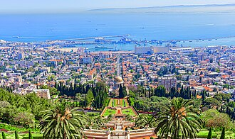

Haifa
Fun Facts About Haifa
Haifa is Israel's third-largest city and is beautifully built on the slopes of Mount Carmel. Known for its diversity and tolerance, Haifa is home to people of many different religions and cultures living together in harmony.
- Haifa is Israel's third-largest city and is built on the slopes of Mount Carmel
- The city is home to the Bahá'í World Centre, a UNESCO World Heritage Site
- Haifa has a diverse population with many different religions and cultures living together
- The city is an important port and industrial center on the Mediterranean Sea
Places to Visit in Haifa
Haifa offers unique attractions that blend natural beauty, spiritual significance, and cultural experiences. Here are some must-see destinations:
- Bahá'í Gardens: Beautiful terraced gardens with stunning views of the city and sea, recognized as a UNESCO World Heritage Site
- Carmel Center: The main shopping and entertainment district with restaurants, shops, and cultural venues
- Haifa Beach: A scenic beach perfect for relaxation and enjoying the Mediterranean Sea
- Stella Maris Monastery: A historic religious site with panoramic views of Haifa Bay and the surrounding area

Haifa is a city that celebrates diversity and offers visitors a unique perspective on Israeli culture. With its combination of natural beauty, spiritual sites, and welcoming community, Haifa is an unforgettable destination.